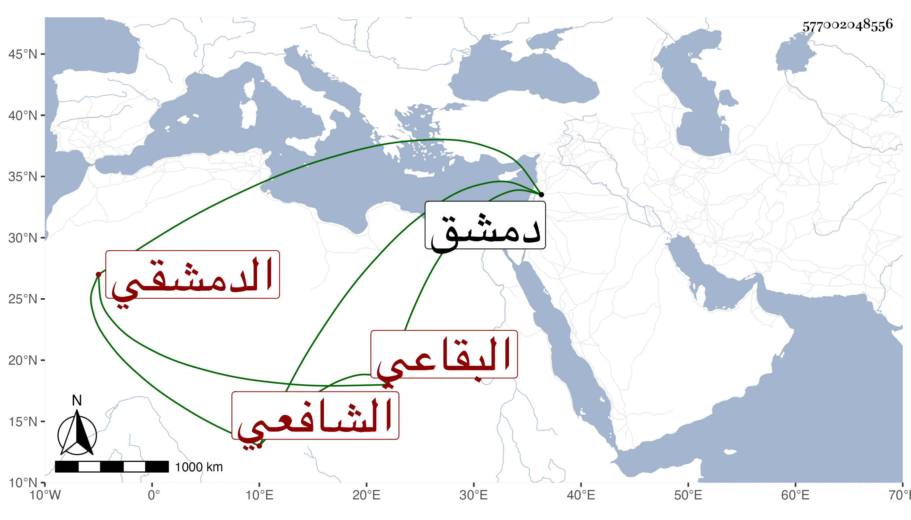

0902Sakhawi.DawLamic.ITO20230111-ara1.EIS1600.577002048556
Biography ID: 577002048556
16
عبد الله بن أحمد بن صالح بن أحمد بن خطاب الجمال بن الشهاب البقاعي الأصل الدمشقي الشافعي المذكور أبوه في المائة الثامنة والآتي أخوه عبد الوهاب ويعرف كهو بالزهري . ولد في جمادى الآخرة سنة تسع وستين وسبعمائة وحفظ التمييز وتفقه بأبيه وأذن له في الإفتاء والتدريس سنة إحدى وتسعين ودرس بالقليجية وغيرها وناب في الحكم ، وكان عالي الهمة لم تطل مدته بعد أبيه . مات بدمشق في المحرم سنة إحدى . ذكره شيخنا في أنبائه .
